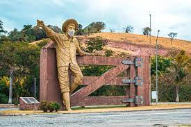
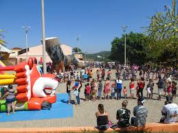

Pontos Turísticos de Ouro Fino
Menino da Porteira
Um dos monumentos mais famosos do Brasil, o Menino da Porteira. A estátua, que está localizada na entrada principal de Ouro Fino e chama atenção de todos que por ali passam, foi inaugurada em 2001, durante as comemorações de 252 anos de Ouro Fino.
Boi sem Coração

O Boi Sem Coração foi um monumento recentemente criado na cidade de Ouro Fino, região sudeste de Minas Gerais. O monumento teve sua inauguração no dia 19 de Dezembro de 2015. A figura simboliza a morte do Menino da Porteira que na canção sertaneja, composta por Teddy Vieira e Luís Raimundo e gravada pela dupla Luizinho e Limeira, é morto por um “Boi Sem Coração”. A canção ficou mesmo famosa quando cantada e divulgada por Sérgio Reis, que foi quando a pequena cidade mineira de apenas 35 mil habitantes ganhou repertório nacional e até ganhou um imenso monumento de 10 metros representando o menino na porteira.
Igreja Matriz

No ano de 1746, os bandeirantes chegaram na região do Vale do Sapucaí, que compreende atualmente o sul de Minas Gerais e o leste de São Paulo, em busca de ouro. Um destes bandeirantes, o sertanista Ângelo Batista, natural de Pindamonhangaba (SP), descobriu ouro nos ribeirões de Ouro Fino, Santa Isabel e São Paulo. O Guarda-Mor (nome dado ao responsável pela região) regente do Sapucaí, Francisco Martins Lustosa, português de origem, fundou o arraial de Ouro Fino e edificou a capela de São Francisco de Paula, que acabaria por ser elevada a paróquia, em 8 de março de 1749.
Praça do Berrante
Após a estátua do Menino da Porteira, na entrada da cidade e do Boi Sem Coração, construído no Centro, vem aí mais um símbolo da música famosa, o berrante. A obra, com R$ 30 mil de investimento, tem 16 metros de comprimento, local amplo com um enorme monumento na forma de berrante, o terceiro em homenagem a música Menino da Porteira. Lá tem parquinho para as crianças e equipamentos de academia ao ar livre. O local tem também várias opções de foodtrucks para alimentação.
Lago dos Palomos
Constituído por quatro lagos o local é totalmente calmo, e um ótimo lugar para colocar os pensamentos em ordem, principalmente as conversas do dia-a-dia. No domingo, é quando o famoso ponto fica mais movimentado, muitos carros tocando músicas e muitas pessoas se divertindo e passando a tarde. O lago conta com iluminação pública, pavimentação composta por uma área para caminhada, aparelhos de ginástica, além de um deck para se desfrutar da paisagem.